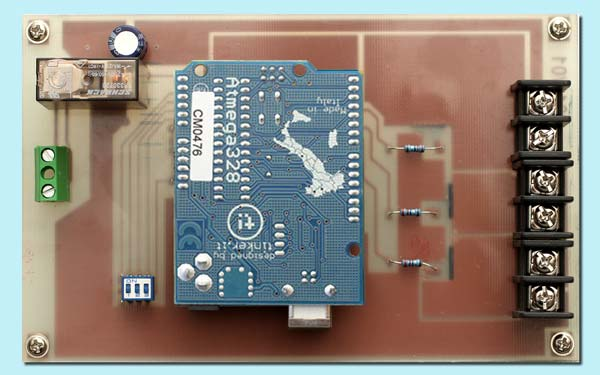
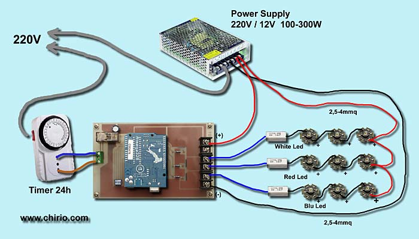
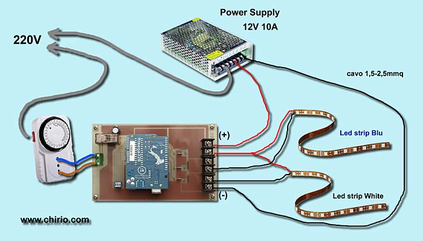
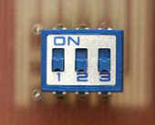
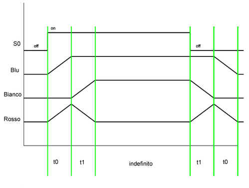

LED & illuminazione
LED DIMMER RGB 3 canali
Controllo luminosità per plafoniera led acquario Effetto alba tramonto automatico "illuminazione LED" di R.Chirio
Indice della pagina

2012 / 2013
Con questo scheda è possibile dare molto realismo all'illuminazione led dell'acquario.
La scheda è semplificata al massimo, non ci sono pulsanti o display, non c'è nessuna procedura complicata di programmazione, veramente una installazione e funzionamento semplificato al massimo.
Basta collegare led e ingresso timer, funziona subito!
Va bene sia con led singoli collegati in serie, oppure si possono collegare ledstrip o barre led del colore voluto, oppure singola barra del tipo RGB.
Il software base permette di fare accensione e spegnimento graduale per alba e tramonto, utilizzando 1, 2 o 3 canali driver PWM.
- Utilizzando un timer esterno si da comando all'ingresso, per quando si vuole accendere, così dopo 10 minuti il canale led bianco sarà a regime con la massima luminosità.
- Con due canali collegati quindi blu e bianco, partirà prima il blu e dopo 10 minuti arriva anche il bianco.
- Con tre canali collegati e aggiungendo una fila di tre led rossi, è possibile avere anche le sfumature rosa/rosse tipiche delle albe/tramonti tropicali.
Il tempo della transizione led è facilmente modificabile tramite commutatore presente sulla scheda.
Schema di collegamento Led

Schema pratico per il collegamento dei vari componenti.
- Il cavo rosso corrisponde al +12V, il cavo nero al negativo. Il cavo blu al negativo (-) dei led.
- Rispettare la polarità nella serie dei led, per semplificare i canali sono stati rappresentati da una sola fila, ma nel caso dei 160W ci sono 13 file led White e 3 file led Blue.
- I collegamenti di potenza canali led devono essere fatti con cavi di opportuna sezione, per 10A usare cavo da almeno 1,5mmq, se di lunghezza superiore al metro meglio usare 2,5mmq.
- Per collegare i led basta un cavo piccolo da 0,35mmq, meglio se con isolamento in silicone adatto ad alte temperature.
- Prestare attenzione al collegamento del Timer 220V ingresso, usare spine e cavi a norme.
- La funzione del relè presente sulla scheda è quello di prendere il comando timer e mantenere isolata la scheda dalla rete 220V.
Schema di collegamento Led Strip

Schema pratico per il collegamento dei vari componenti sulla scheda dimmer 2013/01
- Il cavo rosso corrisponde al +12V, il cavo nero al negativo.
- Rispettare la polarità dei ledstrip, per semplificare i canali sono stati rappresentati da una sola fila, si può aggiungere anche una fila di led strip rossi collegati al morsetto RED.
- Le strisce LED non devono essere più lunghe di 1 metro, se serve più luce, vanno tagliate e collegate in parallelo.
- Tutte le strisce devono essere sempre incollate su una piastra di alluminio della dimensione coperchio acquario.
| Programmazione tempi e test | ||||
|---|---|---|---|---|
|
 |
123 | tempo dissolvenza | ||
| 000 | test | |||
| 001 | 10min | |||
| 010 | 20min | |||
| 011 | 30min | |||
| 100 | 40min | |||
| 101 | 50min | |||
| 110 | 60min | |||
| 111 | 70min | |||
|
- A sistema spento posizionare il dip switch sul tempo desiderato, la posizione (1) corrisponde ad acceso quindi su ON. - Con la posizione 000, tutte le tre levette devono essere in basso, si attiva la funzione TEST. - La funzione Test fà progressivamente accendere e spegnere tutti i 3 canali in un tempo di 10 secondi, così da verificare il corretto funzionamento di tutti i canali led, senza attendere i lunghi tempi di dissolvenza. - Per cambiare programmazione si deve prima spegnere alimentazione, cambiare posizione sullo dip switch e poi ridare alimentazione. |
||||
Diagramma tempi di accensione

- S0 rappresenta il Timer collegato al relè.
- Con l'accensione di S0 la dissolvenza, aumenta il comando PWM dei led blu e rossi, raggiungono il massimo dopo t0=10 (20, ... , 70)minuti. (vedi tabella tempi)
- Successivamente parte il canale led bianchi, scende e si spegne il rosso.
- Finita la fase alba siamo a regime con led bianchi e blu accesi.
- Spegnendo l'ingresso S0 si attiva la fase tramonto sempre di 10 (20, ... 70)minuti.
- Si spengono i bianchi e si accendono i rossi sempre con i blu accesi.
- Ultimo step spegnimento graduale blu e rossi.
- Il sistema si porta in stand-by ed attende che venga riattivato S0
Commenti
Con l'illuminazione Led si possono ottenere ottimi risultati sia luminosi che di risparmio energetico.
Questo dimmer è molto affidabile e facile da collegare, inoltre essendo già programmato, non ha bisogno di pulsanti e display.
Adatto quindi a tutti quelli che vogliono sistemi semplici e facili da usare, senza complicati pulsanti e display.
Ottimizzando la disposizione dei led e aggiungendo una fila di led rossi è possibile ottenere ottima resa dell'alba tramonti.
© Roberto Chirio: all rights reserved.